RUSH Exam 超音波
Rapid Ultrasound for Shock and Hypotension
📋 目錄
概述
RUSH Exam 是由 Weingart 等人於 2006 年提出，用於快速評估未分化休克 (Undifferentiated Shock) 與低血壓患者的床邊超音波 protocol。熟練後可在 2-5 分鐘內完成。
RUSH vs eFAST：eFAST 用於創傷情境尋找出血來源；RUSH 則更廣泛，適用於任何未分化低血壓的患者。
HI-MAP 記憶口訣
當病人 MAP 很低時，我們要把他變成 HI MAP！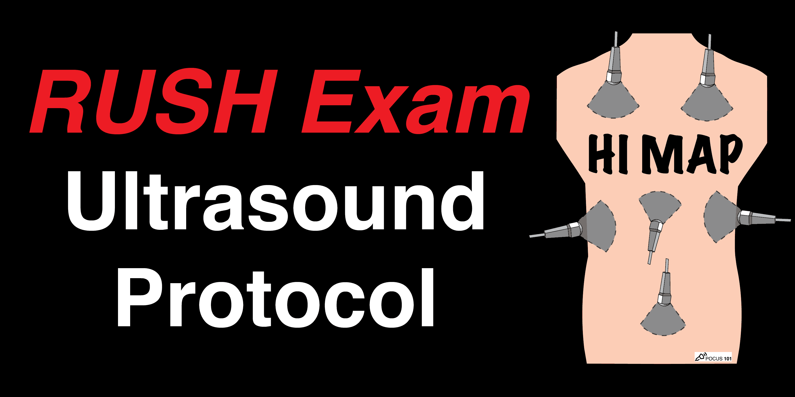
| 字母 | 代表 | 評估病理 |
|---|---|---|
| H | Heart 心臟 | EF 降低 → 收縮性心衰竭；EF 過高 → 分佈性/低血容積性休克；心包積液 → 填塞；RV 擴大 → PE；RWMA → MI；心輸出量高/低 |
| I | IVC 下腔靜脈 | 可塌陷 → 低血容積/分佈性休克；不可塌陷 → 阻塞性/心因性休克 |
| M | Morison's / eFAST | 腹腔積血 (Hemoperitoneum)；血胸 (Hemothorax) |
| A | Aorta 主動脈 | 腹主動脈瘤 (AAA)；主動脈剝離 (Dissection) |
| P | Pulmonary 肺部 | 氣胸 (Pneumothorax) |
準備
- 患者體位：仰臥 (Supine)
- 探頭 (Transducer)：主要使用 Phased Array Probe（部分可用 Curvilinear）；DVT 檢查需換 Linear Probe
- Preset：eFAST 或 Abdominal Mode
- 超音波機：盡量放在患者右側
Step 1：H — Heart 心臟
在低血壓情境下評估心臟功能：心臟是問題本身，還是在代償其他問題？
主要四個 view：Parasternal Long Axis (PLAX)、Parasternal Short Axis (PSAX)、Apical 4 Chamber (A4C)、Subxiphoid View。
⚠️ 使用 eFAST/Abdominal preset 時，orientation marker 在螢幕左側，需將探頭指標旋轉 180°。
1.1 左心室射出分率 (Ejection Fraction, EF)
觀察左心室在心臟週期中的收縮情形：
- Hyperdynamic（過動） → 可能為低血容積或敗血症
- Hypodynamic（收縮不良） → 可能為收縮性心衰竭 (Systolic Heart Failure)
- 注意二尖瓣前葉 (Anterior Leaflet of Mitral Valve) 是否在舒張期自由活動並接近心室中隔
不同程度 EF 的超音波影像：
Hyperdynamic（過動）
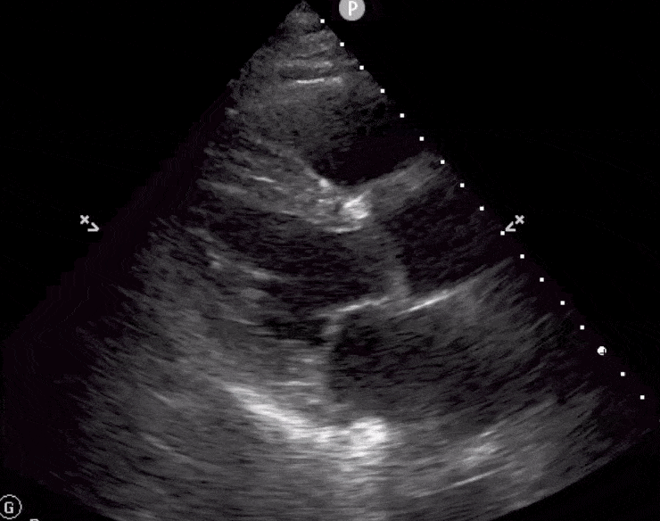Normal（正常）

Mild Decreased（輕度降低）

Moderate Decreased（中度降低）

Severe Decreased（重度降低）

1.2 右心室壓力過大 — 肺栓塞 (RV Strain — Pulmonary Embolism)
- RV 正常大小約為 LV 的 ⅔，若比例增加或心室中隔向左凸出 → RV strain
- McConnell's Sign：RV 游離壁運動減弱 (Hypokinesis)，但心尖活動正常 (Apical Sparing)
McConnell's Sign
- D Sign：PSAX view 下，RV 壓力增加使心室中隔被推向 LV，使 LV 呈 "D" 字形
D Sign — Pressure Overload
⚠️ 以上發現僅提示 RV strain，並非 PE 的特異性表現。若發現 RV strain，應接續進行 DVT 超音波（尋找不可壓縮的靜脈）。DVT + RV strain = 高度懷疑 PE。
1.3 心包積液與填塞 (Pericardial Effusion & Tamponade)
心臟周圍出現顯著的 anechoic（無回音） 區域 → 心包積液
鑑別心包積液 vs 肋膜積液：以降主動脈 (Descending Aorta) 為界——積液在降主動脈前方為心包積液，後方為肋膜積液。
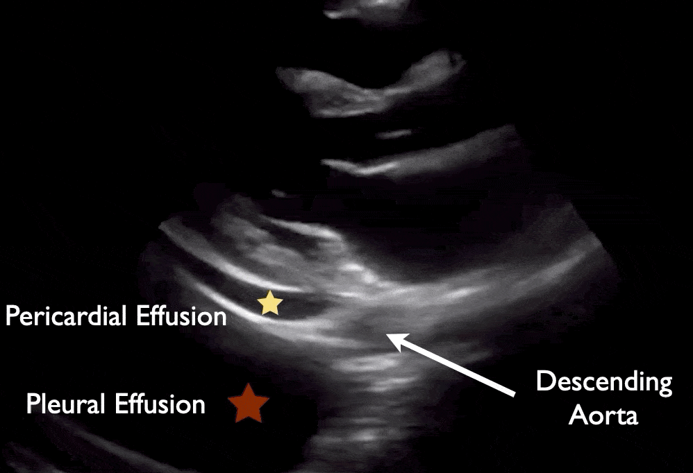心包積液 vs 肋膜積液鑑別
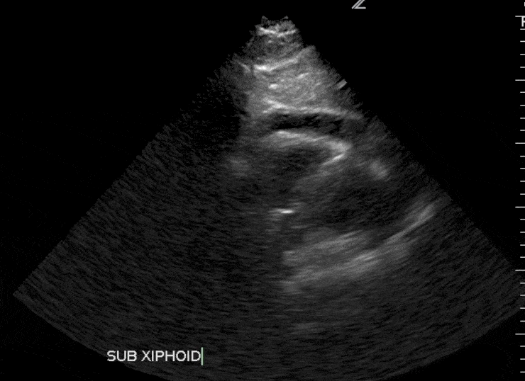心包脂肪墊 (Pericardial Fat Pad) 可能模擬積液——脂肪通常較前方、活動性較差、回音較強：
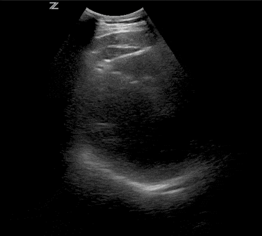心包填塞 (Cardiac Tamponade)：重點不在積液大小，而在積液累積速度。
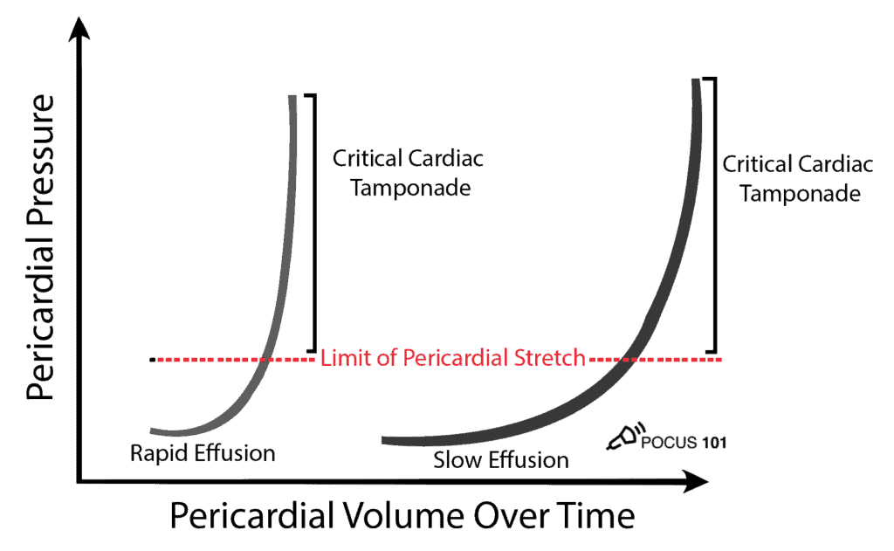辨別填塞的兩個徵象：
1. Right Atrial Systolic Collapse（右心房收縮期塌陷）— 最早、最敏感
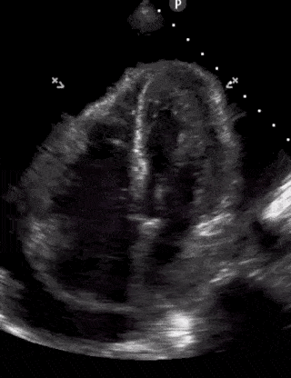2. Right Ventricular Diastolic Collapse（右心室舒張期塌陷）— 較晚、更具特異性

1.4 心輸出量 (Cardiac Output)
透過測量 LVOT Diameter 和 VTI (Velocity Time Integral) 計算心輸出量，幫助區分休克類型。
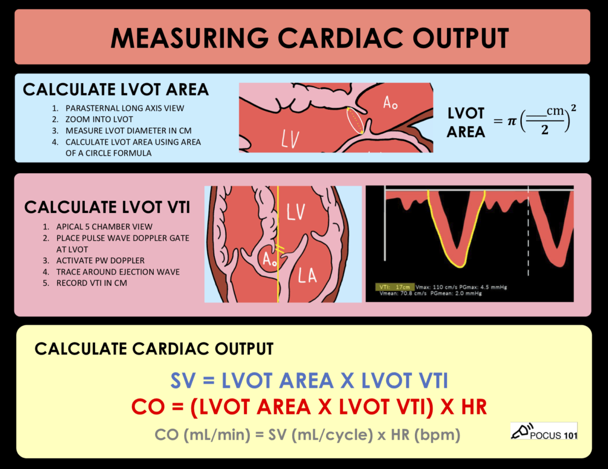Step 2：I — IVC 下腔靜脈
評估中心靜脈壓 (Central Venous Pressure, CVP)：是否有體液流失？還是體液過多導致心臟泵功能不足？
IVC 不可塌陷 (Non-collapsible)：
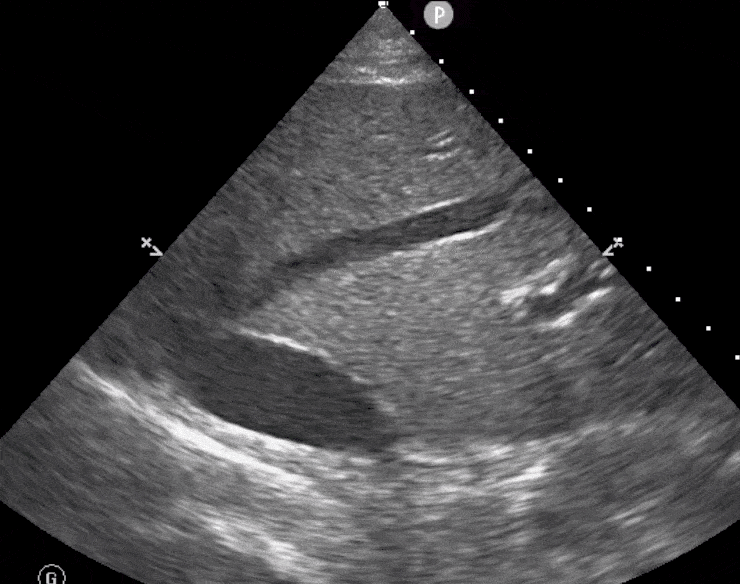IVC 可塌陷 (Collapsible)：
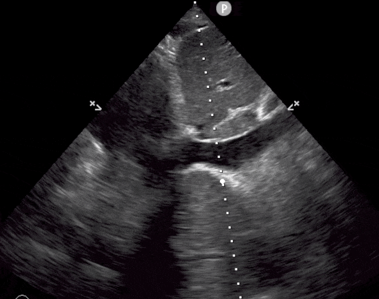IVC 測量與 CVP 估算表
| IVC 直徑 (cm) | 塌陷率 (%) | 估算 CVP (mmHg) |
|---|---|---|
| < 1.5 | > 50% | 0 – 5 |
| 1.5 – 2.5 | > 50% | 6 – 10 |
| 1.5 – 2.5 | < 50% | 11 – 15 |
| > 2.5 | < 50% | 16 – 20 |
Adapted from Kircher et al.
- 高 CVP（擴張、不可塌陷 IVC）→ 阻塞性或心因性休克
- 低 CVP（小且可塌陷 IVC）→ 分佈性或低血容積性休克
休克鑑別表 (Shock Differentiation Table)
| 休克類型 | LV Ejection Fraction | Cardiac Output 心輸出量 | IVC |
|---|---|---|---|
| Distributive 分佈性 | High | High | Collapsible 可塌陷 |
| Obstructive 阻塞性 | Normal / High | Low | Noncollapsible 不可塌陷 |
| Cardiogenic 心因性 | Low | Low | Noncollapsible 不可塌陷 |
| Hypovolemic 低血容積性 | High | Low | Collapsible 可塌陷 |
Step 3：M — Morison's Pouch / eFAST
執行 eFAST 掃描（RUQ、LUQ、骨盆），尋找腹腔積血 (Hemoperitoneum) 或血胸 (Hemothorax) 作為低血壓原因。
3.1 腹腔積血 (Hemoperitoneum)
右上腹 (RUQ)
三個常見積液位置：
- Hepatorenal Space (Morison's Pouch)
- 肝臟尾端 (Caudal Tip of Liver)
- 肝上間隙 (Suprahepatic Space)

左上腹 (LUQ)
評估位置：
- Perisplenic Space（脾周間隙）
- Spleen Tip（脾臟尖端）
- Splenorenal Recess（脾腎間隙）
💡 LUQ 最常見積液位置是 Perisplenic Space，而非脾腎之間（因脾腎韌帶阻擋）。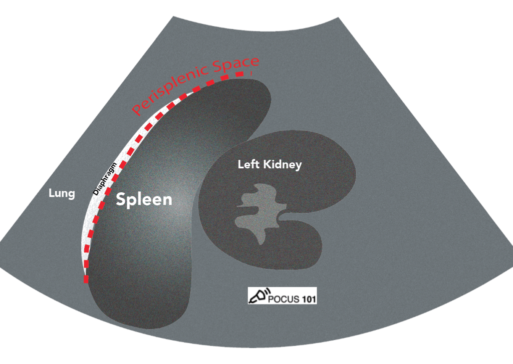 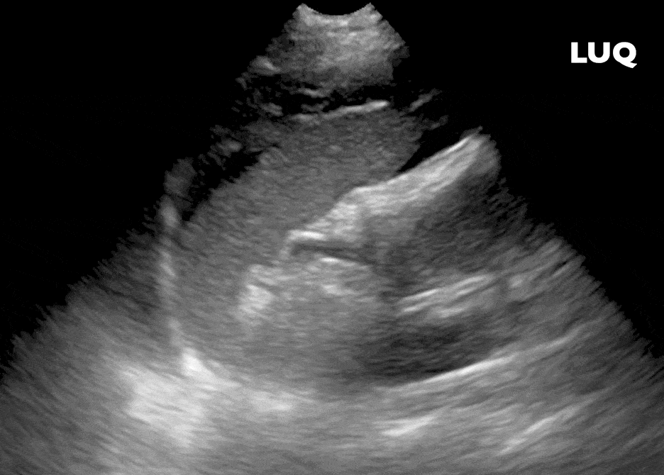
男性骨盆
積液出現在 Rectovesical Pouch（直腸膀胱窩）。
 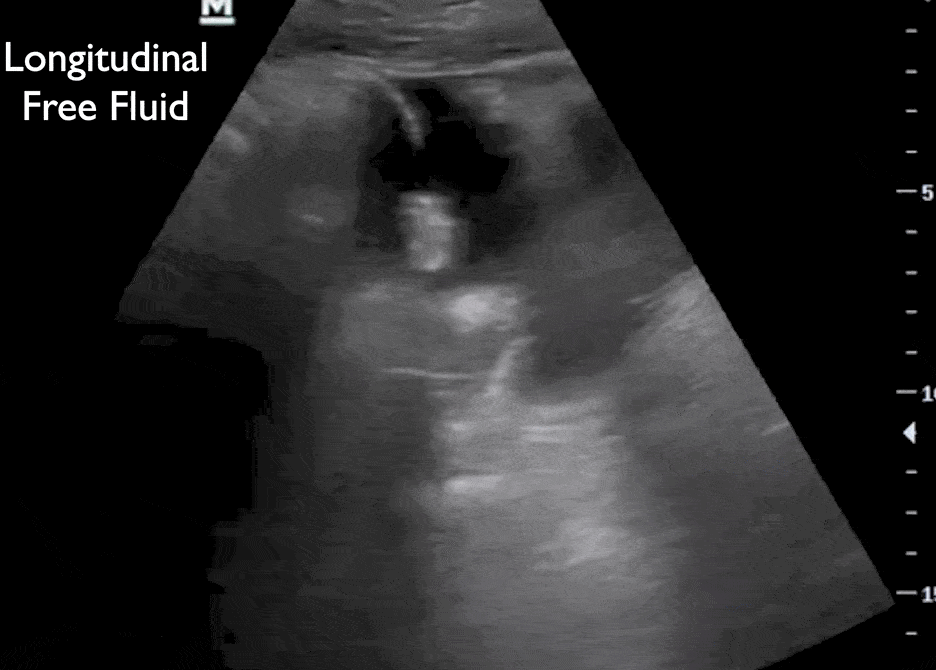
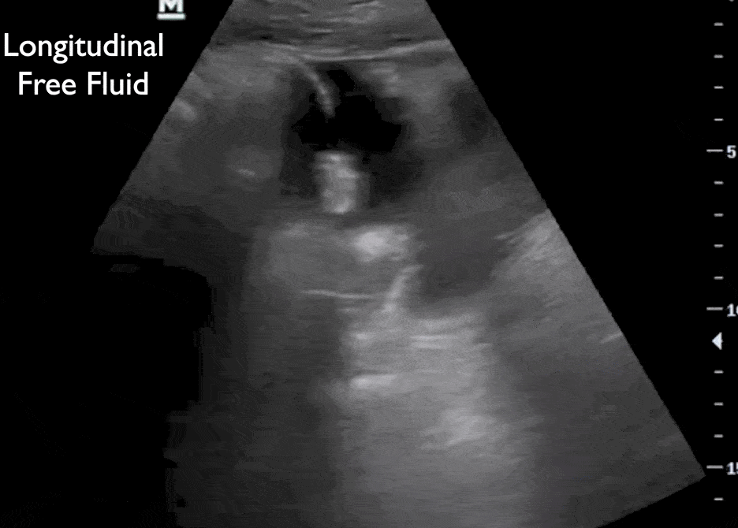
女性骨盆
積液出現在 Pouch of Douglas（Douglas 窩 / 直腸子宮窩）。
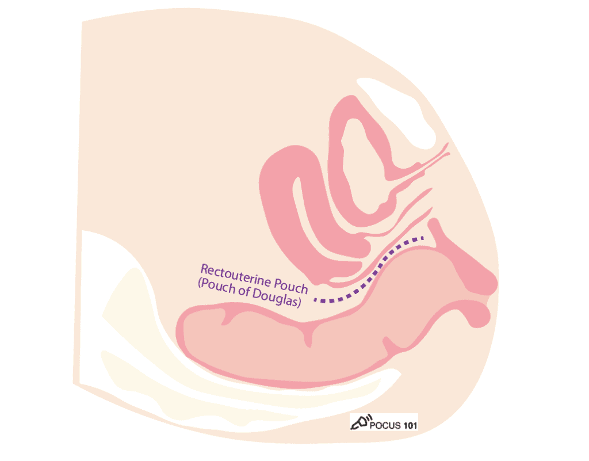 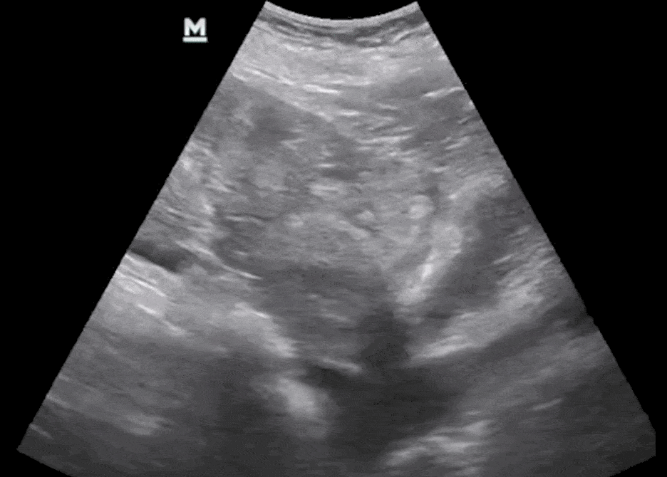3.2 血胸 (Hemothorax)
評估完 RUQ/LUQ 後，將探頭向上移一至兩個肋間，檢查胸腔積液。
正常肺：Mirror Image Artifact，橫膈上方看不到脊椎。
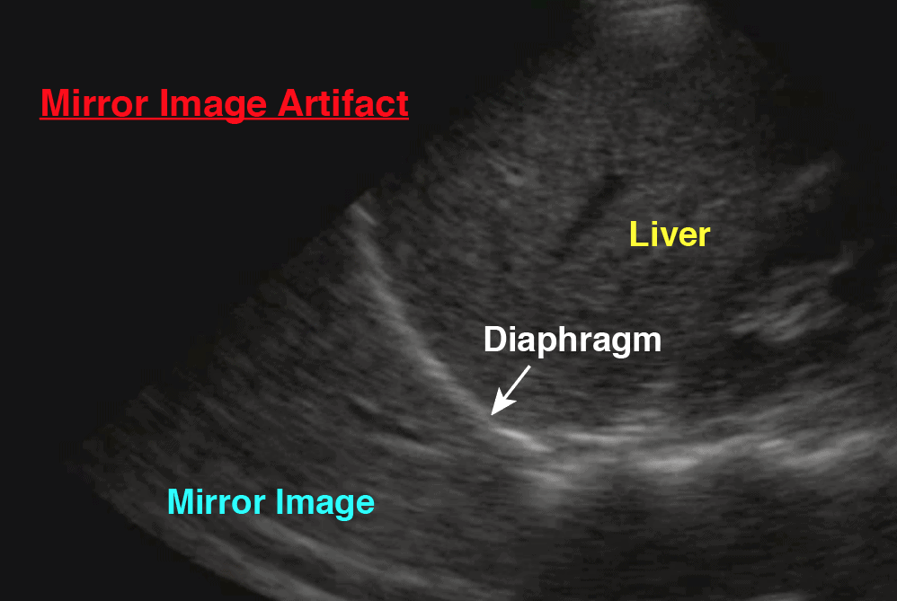Positive Spine Sign（脊椎徵）：可在橫膈上方看到脊椎 → 胸腔有積液（超音波可穿透液體看到脊椎）。

Step 4：A — Aorta 主動脈
4.1 腹主動脈瘤 (Abdominal Aortic Aneurysm, AAA)
- 正常主動脈直徑約 ~2.0 cm
- AAA 定義：腹主動脈 ≥ 3 cm 或直徑增加 > 50%
- 髂動脈 ≥ 1.5 cm
- AAA ≥ 5 cm + 低血壓 → 視為破裂直到排除
- 測量需從 外壁到外壁 (Outer wall to Outer wall)
4.2 主動脈剝離 (Aortic Dissection)
臨床表現多樣：胸痛、腹痛、背痛、中風樣症狀、甚至僅為全身不適。
TTE 特異性高但敏感度不佳。若高度懷疑但 TTE 陰性 → 考慮 TEE 或 CT Angiogram。
超音波上可見主動脈腔內的 free flap（游離瓣膜）：
PLAX — 升主動脈剝離
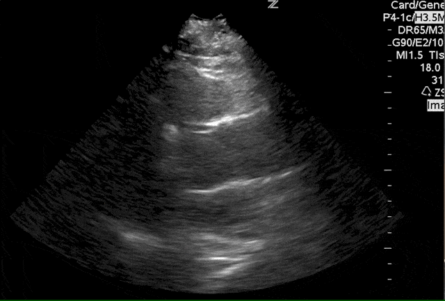Suprasternal Notch — 升主動脈/主動脈弓
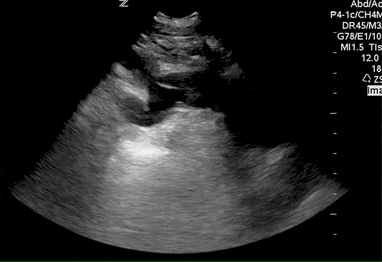降腹主動脈剝離
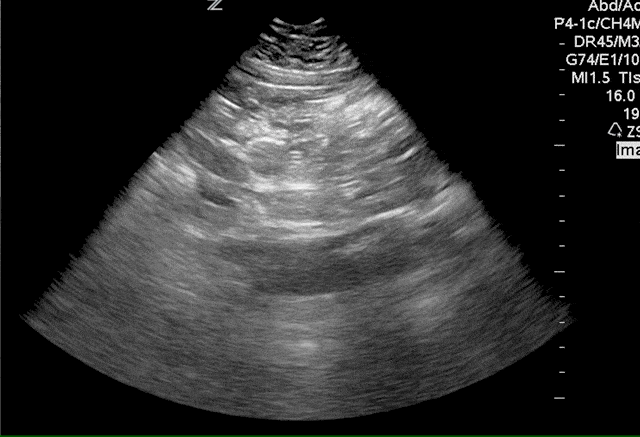主動脈剝離合併主動脈瓣逆流 (Aortic Regurgitation)

Step 5：P — Pulmonary 肺部
評估張力性氣胸 (Tension Pneumothorax) 作為低血壓/休克的原因。
氣胸評估三步驟
第一步：Lung Sliding 存在 → 排除氣胸
Lung Sliding 存在時，可在該掃描點以 100% 準確度排除氣胸。
記得在多個點掃描以提高敏感度。
B-Mode — 正常 Lung Sliding：

M-Mode — Seashore Sign（正常）：
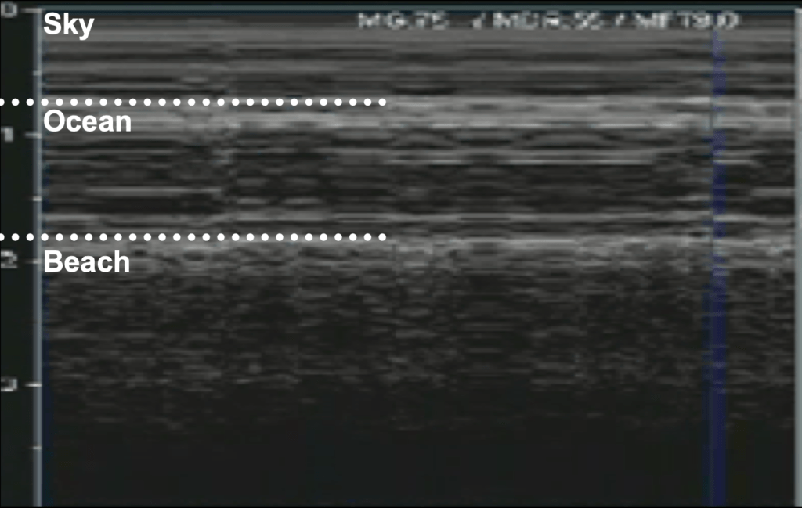第二步：Lung Sliding 缺失 ≠ 自動等於氣胸
其他原因包括：嚴重實質化 (Consolidation)、化學性肋膜沾黏 (Pleurodesis)、急性感染/發炎、肺纖維化、ARDS、主支氣管插管 (Mainstem Intubation)。
Absent Lung Sliding：

M-Mode — Stratosphere / Barcode Sign（異常）：

第三步：Lung Point 存在 → 確認氣胸
Lung Point：正常 lung sliding 與缺失 lung sliding 的交界處 = 塌陷肺與正常肺的過渡點。可以 100% 準確度確認氣胸，並幫助評估氣胸大小。
B-Mode — Lung Point：

M-Mode — Lung Point（Seashore → Barcode 的過渡）：

限制 (Limitations)
- 體型 (Body Habitus)
- 患者體位限制
- 物理環境限制影響理想成像
參考資料 (References)
- 來源：POCUS 101 — RUSH Exam Step-by-Step Guide
- Weingart et al. (2006) — 原始 RUSH 文章
- Seif D, Perera P, et al. Bedside ultrasound in resuscitation and the rapid ultrasound in shock protocol. Crit Care Res Pract. 2012.
- Kircher et al. — IVC collapsibility index
- Husain LF, et al. Sonographic diagnosis of pneumothorax. J Emerg Trauma Shock. 2012.
- Chan S. Emergency Bedside Ultrasound to Detect Pneumothorax. Acad Emerg Med. 2003.
- Keikha M, et al. Diagnostic Accuracy of RUSH Exam: A Systematic Review and Meta-analysis. Bull Emerg Trauma. 2018.
Made with ❤️ by Jarvis · Source: POCUS 101